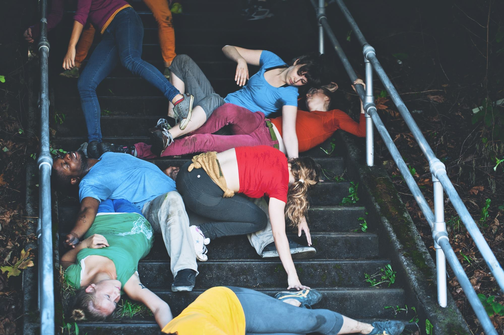
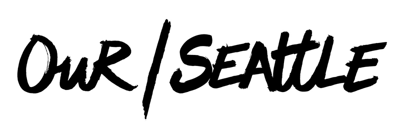
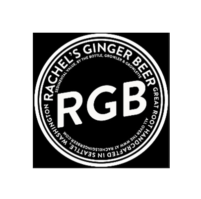
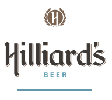

NEPO House is proud to present the final
NEPO 5K DON'T RUN 2015 // The End is NEPO!
SATURDAY August 29th 2015
From Hing Hay Park (ID) to NEPO House (Beacon Hill)
Suggested ADMISSION $15 (children are free)
For the last time local artists will transform nearly 5km of ordinary city streets into an urban wonderland. Come see their site-specific installations and performances, bring your friends, kids, uncles and aunts, and remember: hop, skip and jump - just don't run!
ARTISTS
Vis-a-Vis Society, DK Pan, Gretchen Frances Bennett, Nathaniel Russell, Sylwia Tur, Shaun Kardinal, Maura Brewer & Anastasia Hill, Maggie Carson Romano, Claire Cowie & Leo Saul Berk, SYNKHRA Pie & Mystical Orchid, meadow starts with p, Eirik Johnson, PE|Mo, Nat Evans & Erin Elyse Burns, NoTouching Ground & Kat Larson, John Osebold, Trevor Johnson, Aaron Murray, Coco Allred, Samuel Wildman, Coleman Pester // TECTONIC MARROW SOCIETY, Colleen RJC Bratton, Greg Lundgren, Rathke/Wright/Cohen/Law, Chris Burnside, Cameron Hostetter and Forrest Perrine, Peter Dee, Alyza DelBread Monley, & Jan Trumbauer, Philip Ladeau, Aidan Fitzgerald, Joey Veltkamp & Ben Gannon, Max Cleary & Katy Lester, Jean Nagai, Britta Johnson, Fritz Rodriguez, Keeara Rhoades, Ryan Law, Isabel Blue, Francesca Lohmann, Ken Turner, Glenn Herlihy, Margarita Sanchez Urdaneta, Carolina Silva & Rumi Koshino, Matt Browning, Julia Freeman, John Teske, Calie Swedberg, Elias Hansen, Sarah Galvin, Reilly Sinanan, Eric Aguilar, Max Kraushaar.
CURATORS: Klara Glosova, Sierra Stinson, Zack Bent and Serrah Russell
START IN HING HAY PARK 12:00 - 3:00 PM(423 Maynard Ave S, Seattle WA - corner of Maynard and King)
Registration by Vis-a-Vis Society
MC Emmett Montgomery
ART WALK 1:00 - 6:00 PM
FINISH LINE AT NEPO HOUSE 6:00 - 10:00 PM
(1723 S Lander St, Seattle WA)
Performances curated by Alice Gosti
Bands: LAKE, Lisa Prank and The Fabulous Downey Brothers
Food Trucks: Tasty Vibes and Chopstix Mobile
Drink or Don't Drink Garden
We recommend taking Light Rail. Stations located a few blocks from both start and finish line.
Posters by Jonathan Horn
Maps by Adam Boehmer
Water and recycling station provided by Friends of Lewis Park
Beverages graciously donated by Hilliards, Our/Seattle Vodka and Rachel's Ginger Beer.
Contact: nepohouse@gmail.org
This project was supported in part by a grant from the Seattle Office of Arts & Culture.
This program is also supported in part by a grant from the Washington State Arts Commission,
and a grant from the National Endowment for the Arts (NEA).
  